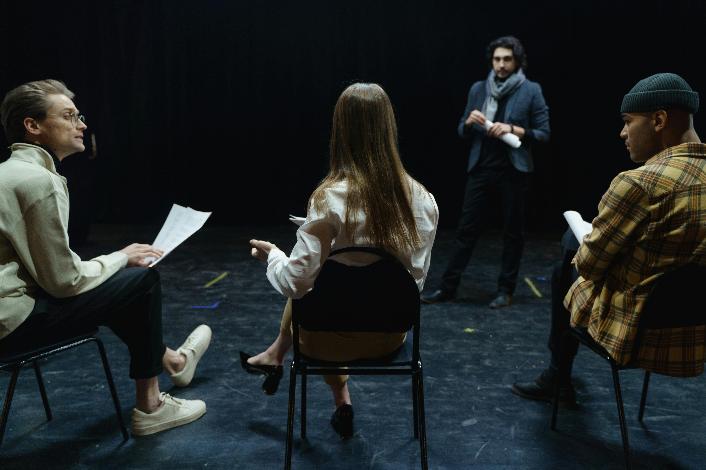

Tennessee Williams' A Streetcar Named Desire burns with raw emotion as fading Southern belle Blanche DuBois moves into her sister Stella's New Orleans apartment—only to collide with the brutal reality of Stella's husband, Stanley Kowalski. Passion, tension, and vulnerability explode in this timeless masterpiece of truth and illusion.
Show Dates: November 15 - November 29, 2025
Venue: Cat Eyes Theatre, Main Stage
Running Time: Approximately 3 hours (including intermission)
| Production Company | Dog Tail Theatre Company |
|---|---|
| Director | Paul Wright |
| Cast Members |
|
| Stage Crew Members |
|
"A raw and emotional journey that grips you from the first scene. The performances were nothing short of extraordinary." - Michael Trevor, The Evening Post
- Michael Trevor, The Evening Post
"A beautifully crafted production that delves deep into the complexities of human nature. Truly unforgettable
- Paul Smith, Stage and Screen